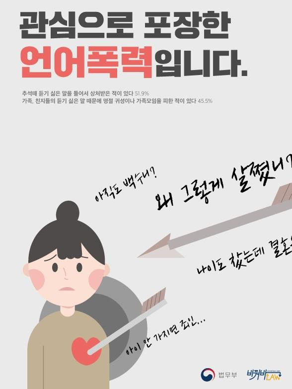
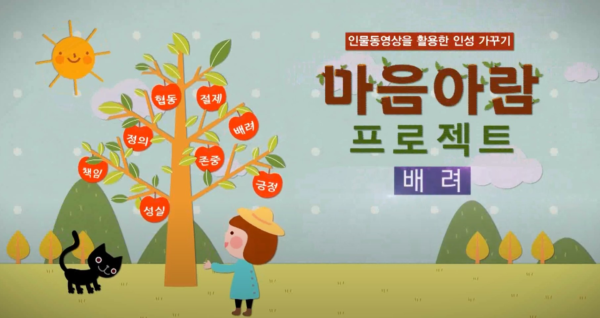

|  |  |  |
 |
|
관심으로 포장한 언어폭력의 위험성 상대방을 배려하지 않고 장난식으로 내뱉은 말이 듣는 사람에게는 큰 상처가 될 수 있음을 강조 |
관심으로 포장한 언어폭력의 위험성 상대방을 배려하지 않고 장난식으로 내뱉은 말이 듣는 사람에게는 큰 상처가 될 수 있음을 강조 |
남을 위해 쓰는 마음, 배려 (10분 12초) 다른 사람들에게 관심을 갖고 공감하며 나눔을 실천 |
너에게로 닿는 길-친절과 배려의 가치 다른 사람의 입장을 고려하고 배려하는 사람은 손해를 보는 것 같은 기분이 들 때 배려가 지닌 힘에 대한 가치를 고민해보고 실천화 |
너에게로 닿는 길-디스를 넘어서 각자가 지닌 가치를 이해하고 차별이 아닌 차이의 관점에서 서로를 바라보는 태도 기르기 |